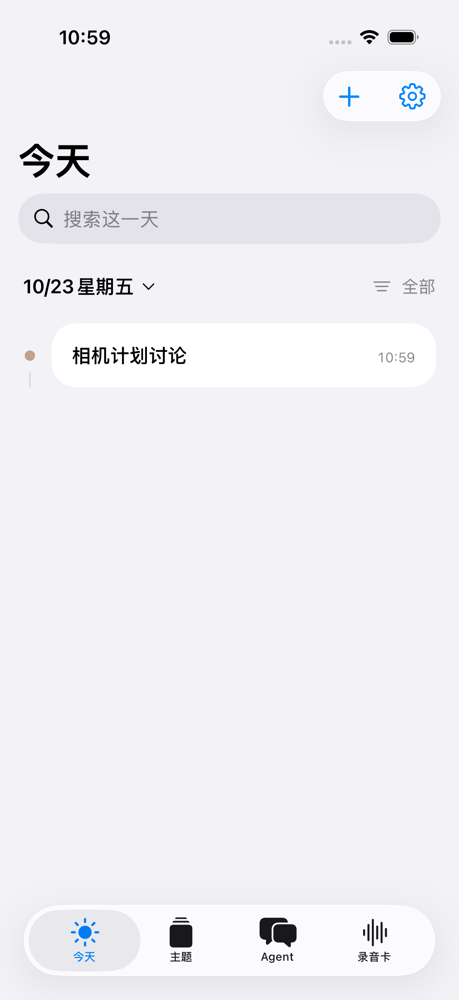
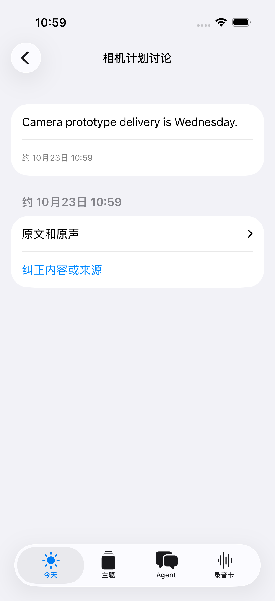

心力卡
iPhone 也能拥有
随身上下文。
原生 iPhone + Mac · 开源可改
所用录音卡硬件 不到 ¥200*
*维护者参考价 · ASR / 模型 / 服务器另计

记录 → 事件 → 问答
找到原句，
纠正一次，
再问你的 Agent。
Android 跨品牌适配规划中
需 Mac/Xcode 自行构建
记下来，
还能找到原句。
记录变成上下文，也保留依据。

01 / RECORD录音或补记先记录发生的事，
整理成事件和主题。
02 / SOURCE回到原句打开来源，
看看答案依据什么。
03 / CORRECT纠正后，再问相关旧答案失效，
重新问答采用新依据。
图为实际原生界面，输入与模型响应为合成夹具。
展示处理链路，不代表 ASR 或模型理解质量。
先算清楚，
硬件多少钱。
不到 ¥200*
仅指本项目所用的录音卡硬件
*维护者提供的价格参考，非固定售价。
购买前核对 CB08 型号与固件，不能按外观判断兼容。
ASR / 模型用你自己的授权服务
费用由服务与用量决定
后端 / 存储自己部署与维护
服务器及原声存储费用另计
手机 / 电脑使用已有设备和构建环境
不计入录音卡单价
可以先不买卡：从合成演示或文字补记开始。
先不买卡，
也能跑一遍。
按手边的条件，选一条路径。
01 / DEMO没有硬件、没有密钥Python 3.11+ → 合成演示报告
看到事件、主题、问答与纠正前后结果。
02 / NATIVE TEXT有自己的文字模型启动后端 → 构建 iPhone / Mac
先用文字补记，跑通完整处理和纠正。
03 / RECORDER再接录音卡与 ASRCB08 → iPhone 保存 / 补传 → 后端
两端查看同一空间的事件和问答。
开发者预览：需要 Mac/Xcode 构建与真机签名。
新公开包实体 BLE/锁屏仍待复验；全天连续性与续航尚未验收。
没有商店安装包。完整步骤在 GitHub README。
开源了，
也欢迎你来改。
先跑一次，再选一个具体扩展。
GitHub
jingchang0623-crypto/xinlika
01 改个人 Agent 提示词
02 接新录音设备或模型
03 一起做 Android 客户端
iPhone + Mac 已有原生源码。
Android 跨品牌适配是下一步，尚无公开客户端。
后端 MIT · 客户端 GPL-3.0-only
告诉我们：
你想先用，还是先 Fork？
https://github.com/jingchang0623-crypto/xinlika